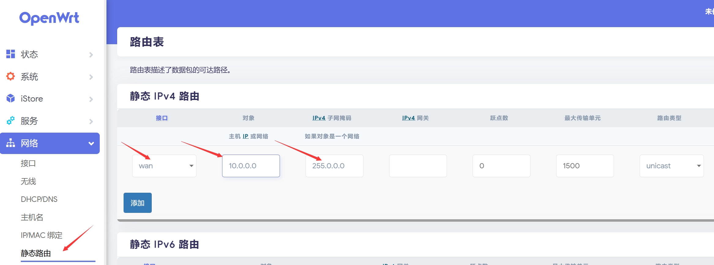
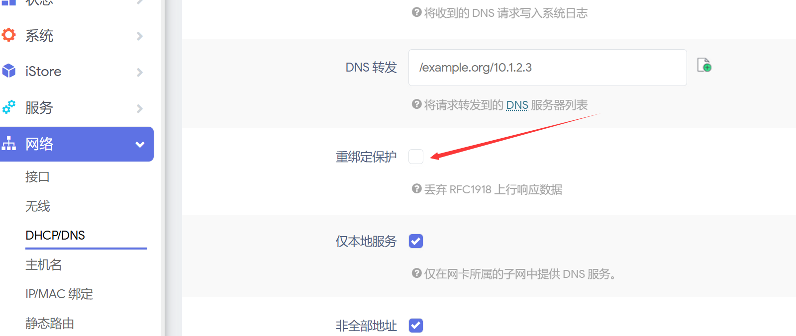
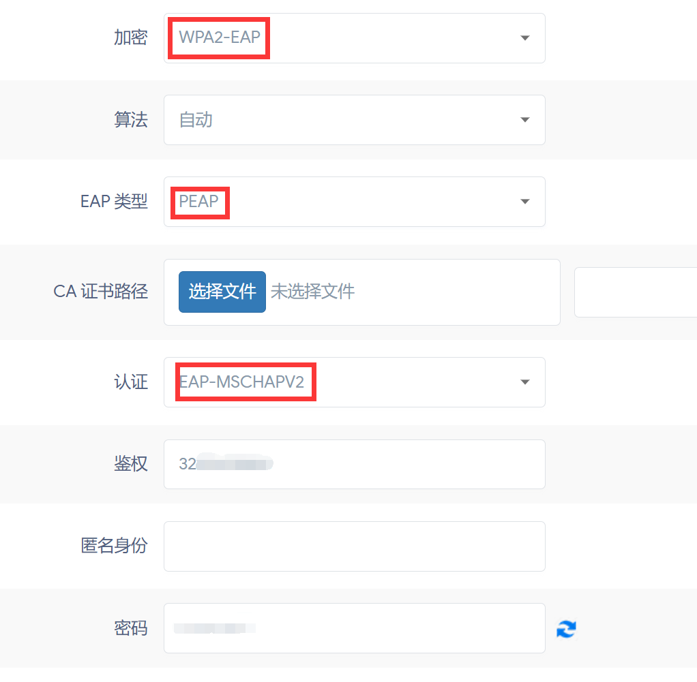
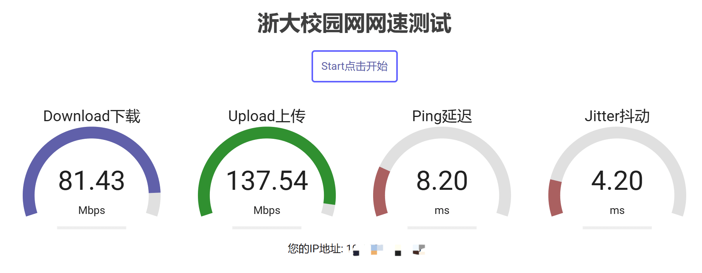
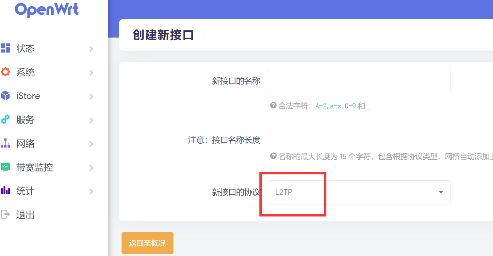
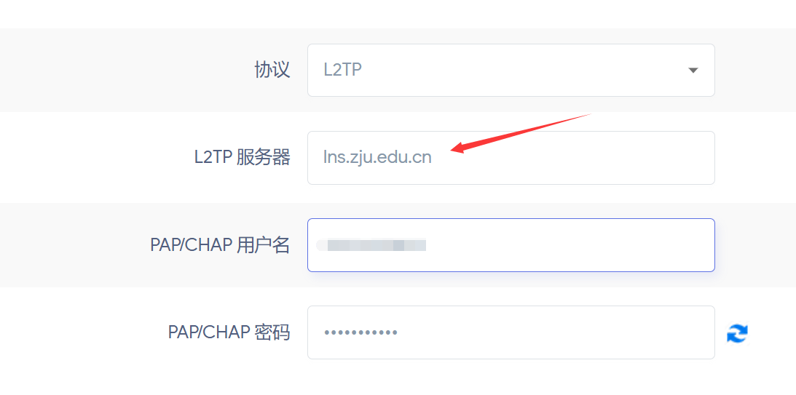
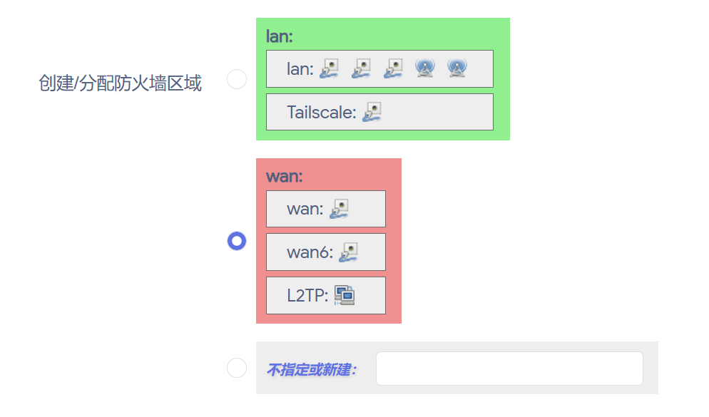

硬路由（3）—— 校园网 & 认证方案
本篇文章主要参考这篇博客。
校园网环境下的特殊配置
静态路由
如果主机只能 ping 通网关，但不能 ping 通其他地址，这可能是路由表的问题。Linux 下有一种称为“策略路由”的高级路由方法，它可以根据不同的策略转发到不同的（最多256个）路由表并执行不同的路由。而从路由器发出的 ping 和从主机发出的 ping 默认走的不是同一个路由表，因此出现了上述的问题。我们可以用下面的命令简单地让所有经过路由器的数据都走主路由表，这样我们设置一个路由表就相当于设置所有的路由，在当前的网络情况下是没问题的。
1 | ip rule add from all lookup main pref 0 |
我们最好将这个配置保存起来以便每次开机自动执行。修改/etc/rc.local文件，在前面增加两行：
1 | ip rule add from all lookup main pref 0 |
每次无线网络重启时也需要执行这两句。
当然，我们也可以在 OpenWrt 的 LuCi 界面中配置静态路由。
在网络 - 静态路由处进行设置，注意接口应选择 wan。网关填写路由器 LAN 地址。

完整的路由表：
1 | [FirstLineRouteTable] // VPN 客户端设置文件 |
关闭重绑定保护
很多版本的 OpenWrt 都默认屏蔽了 RFC1918（私有地址空间标准），如果对公网域名解析得到的 IP 是机器所在的内网网段 IP，路由器就会自动屏蔽掉这条流量。这个默认设置会导致路由器能够 ping 通学校内网地址，但是无法通过域名访问。
解决办法：在网络 - DHCP/DNS处取消勾选“重绑定保护”。

Web 认证方案
近期学校对网络架构进行了升级，有些宿舍楼的 L2TP 与 IPv6 出现了问题。有的同学猜测可能是信息中心想解决不登录上网账号就能使用 IPv6 的问题。因此，我们可以使用网页认证的方式进行联网。
但这种方式有一些限制：如果不认证，内网和外网均无法访问；14 天周期过后，必须重新登录才能联网。如果我们想要实现持续的远程访问，就得使用脚本来进行保活，检测到断网时自动重新登录。
这里是三个可用的脚本，论坛上还有更多，请各位自行寻找。
无线 Client（推荐）
由于交换机的限制，玉泉部分宿舍通过有线网连接的带宽最高只能为百兆。但无线连接却并没有限制到百兆。因此，我们完全可以使用路由器的无线 Client 模式接入校园网。学校提供了 ZJUWLAN-Secure，通过 PEAP 方式进行认证，这使得我们无需担心网页认证保活的问题。
我们先在网络 - 无线 - 无线概况中点击对应频段的扫描按钮，连接到 ZJUWLAN-Secure 后，回到无线配置界面的接口配置 - 无线安全部分，选择加密方式为 WPA2-EAP（若无此选项，请搜索教程安装对应的软件包即可），EAP 类型为 PEAP，认证选项为 EAP-MSCHAPV2。在鉴权处输入你的学号，密码处输入你的统一身份认证密码，点击保存&应用，稍等片刻即可成功连上网络。

经过简单测速，相比于 L2TP 方式（下行 60M，上行 80M），无线 Client 模式可达到下行 80M，上行 140M 的速度，观看 4K 视频也不会出现卡顿的情况了。

L2TP
安装 xl2tpd 包
如果路由器中没有 xl2tpd 这个包，我们需要先安装它。因此路由器需要能够访问公网。通过有线和无线共享网络的方式已在上一章节：系统调优 & 局域网组网中写明，可以参考。
进入路由器的后台页面，在服务 – 终端中输入如下命令：
1 | opkg update && opkg install xl2tpd |
如果提示错误，请考虑更换软件源。
配置 L2TP
在 LuCi 中找到网络 – 接口 - 添加新接口...，添加一个接口，协议选择 L2TP。

填入 L2TP 服务器地址（lns.zju.edu.cn），用户名，密码。

在防火墙设置中选择防火墙区域为 Wan 区域（或者有专门的 VPN 区域则选择那个），最后连接，可能需要重启路由器。

下一章节：Tailscale & 远程访问（IPv4）